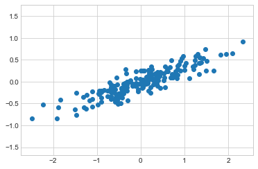
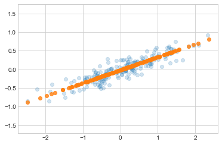
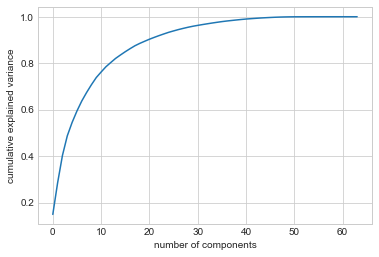
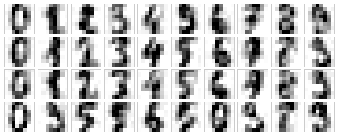
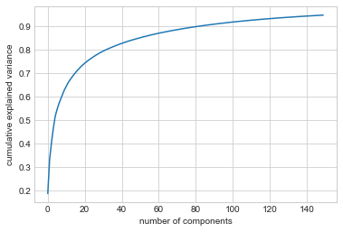

%matplotlib inline
import numpy as np
import matplotlib.pyplot as plt
plt.style.use('seaborn-whitegrid')심층 분석: 주성분 분석
지금까지 우리는 지도 학습 추정기, 즉 레이블이 지정된 훈련 데이터를 기반으로 레이블을 예측하는 추정기에 대해 자세히 살펴보았습니다. 여기서는 알려진 레이블을 참조하지 않고도 데이터의 흥미로운 측면을 강조할 수 있는 여러 비지도 추정기를 살펴보기 시작합니다.
이번 장에서는 아마도 가장 널리 사용되는 비지도 알고리즘 중 하나인 주성분 분석(PCA)을 살펴보겠습니다. PCA는 기본적으로 차원 축소 알고리즘이지만 시각화, 노이즈 필터링, 특징 추출 및 엔지니어링 등을 위한 도구로도 유용할 수 있습니다. PCA 알고리즘에 대한 간단한 개념적 논의를 마친 후 이러한 추가 응용 프로그램의 몇 가지 예를 살펴보겠습니다.
표준 가져오기부터 시작합니다.
주성분 분석 소개
주성분 분석은 데이터의 차원 축소를 위한 빠르고 유연한 비지도 방법으로, Scikit-Learn 소개에서 간략하게 살펴보았습니다. 그 동작은 2차원 데이터세트를 보면 가장 쉽게 시각화할 수 있습니다. 다음 200개 점을 고려하십시오(다음 그림 참조).
rng = np.random.RandomState(1)
X = np.dot(rng.rand(2, 2), rng.randn(2, 200)).T
plt.scatter(X[:, 0], X[:, 1])
plt.axis('equal');
눈으로 보면 x 변수와 y 변수 사이에 거의 선형 관계가 있는 것이 분명합니다. 이는 심층: 선형 회귀에서 살펴본 선형 회귀 데이터를 연상시킵니다. 하지만 여기서 문제 설정은 약간 다릅니다. x 값에서 y 값을 예측하려고 시도하는 대신, 비지도 학습 문제는 x 값과 y 값 사이의 관계에 대해 학습하려고 시도합니다.
주성분 분석에서는 데이터에서 주축 목록을 찾고 해당 축을 사용하여 데이터세트를 설명함으로써 이 관계를 정량화합니다. Scikit-Learn의 ‘PCA’ 추정기를 사용하면 다음과 같이 계산할 수 있습니다.
from sklearn.decomposition import PCA
pca = PCA(n_components=2)
pca.fit(X)PCA(n_components=2)피팅은 데이터로부터 일부 수량, 가장 중요한 구성 요소 및 설명된 분산을 학습합니다.
print(pca.components_)[[-0.94446029 -0.32862557]
[-0.32862557 0.94446029]]print(pca.explained_variance_)[0.7625315 0.0184779]이러한 숫자가 무엇을 의미하는지 확인하기 위해 구성 요소를 사용하여 벡터의 방향을 정의하고 설명된 분산을 사용하여 벡터의 제곱 길이를 정의하여 입력 데이터에 대한 벡터로 시각화해 보겠습니다(다음 그림 참조).
def draw_vector(v0, v1, ax=None):
ax = ax or plt.gca()
arrowprops=dict(arrowstyle='->', linewidth=2,
shrinkA=0, shrinkB=0)
ax.annotate('', v1, v0, arrowprops=arrowprops)
# plot data
plt.scatter(X[:, 0], X[:, 1], alpha=0.2)
for length, vector in zip(pca.explained_variance_, pca.components_):
v = vector * 3 * np.sqrt(length)
draw_vector(pca.mean_, pca.mean_ + v)
plt.axis('equal');
이러한 벡터는 데이터의 주요 축을 나타내며, 각 벡터의 길이는 해당 축이 데이터 분포를 설명하는 데 얼마나 “중요”한지를 나타냅니다. 보다 정확하게는 해당 축에 투영할 때 데이터의 분산을 측정한 것입니다. 각 데이터 포인트를 주축에 투영하는 것이 데이터의 주요 구성 요소입니다.
원본 데이터 옆에 이러한 주성분을 플로팅하면 다음 그림과 같은 플롯이 표시됩니다.

데이터 축에서 주축으로의 변환은 아핀 변환입니다. 즉, 변환, 회전 및 균등 스케일링으로 구성됩니다.
주성분을 찾는 이 알고리즘은 단순한 수학적 호기심처럼 보일 수 있지만, 머신러닝(Machine Learning) 및 데이터 탐색 분야에서 매우 광범위한 응용 프로그램이 있는 것으로 밝혀졌습니다.
차원 축소로서의 PCA
차원 축소를 위해 PCA를 사용하면 가장 작은 주성분 중 하나 이상을 0으로 만드는 작업이 포함되어 최대 데이터 분산을 유지하는 데이터의 저차원 투영이 생성됩니다.
다음은 PCA를 차원 축소 변환으로 사용하는 예입니다.
pca = PCA(n_components=1)
pca.fit(X)
X_pca = pca.transform(X)
print("original shape: ", X.shape)
print("transformed shape:", X_pca.shape)original shape: (200, 2)
transformed shape: (200, 1)변환된 데이터가 단일 차원으로 축소되었습니다. 이러한 차원 축소의 효과를 이해하기 위해 축소된 데이터의 역변환을 수행하고 원본 데이터와 함께 플롯할 수 있습니다(다음 그림 참조).
X_new = pca.inverse_transform(X_pca)
plt.scatter(X[:, 0], X[:, 1], alpha=0.2)
plt.scatter(X_new[:, 0], X_new[:, 1], alpha=0.8)
plt.axis('equal');
밝은 점은 원본 데이터이고 어두운 점은 투영된 버전입니다. 이는 PCA 차원 축소가 무엇을 의미하는지 명확하게 보여줍니다. 즉, 가장 중요하지 않은 주축을 따른 정보가 제거되고 분산이 가장 높은 데이터 구성 요소만 남습니다. 잘라낸 분산 비율(이전 그림에서 형성된 선 주위의 점 확산에 비례)은 대략 이러한 차원 축소에서 얼마나 많은 “정보”가 폐기되는지를 측정한 것입니다.
이 축소된 차원의 데이터 세트는 어떤 의미에서는 포인트 간의 가장 중요한 관계를 인코딩하기에 “충분히 좋습니다”. 데이터 기능 수를 50% 줄였음에도 불구하고 데이터 포인트 간의 전체 관계는 대부분 유지됩니다.
시각화를 위한 PCA: 손으로 쓴 숫자
차원 축소의 유용성은 2차원에서만 완전히 드러나지 않을 수 있지만 고차원 데이터를 보면 분명해집니다. 이를 확인하기 위해 심층: 의사결정 트리 및 랜덤 포레스트에서 작업한 숫자 데이터세트에 PCA를 적용하는 방법을 간략하게 살펴보겠습니다.
데이터를 로드하는 것부터 시작하겠습니다.
from sklearn.datasets import load_digits
digits = load_digits()
digits.data.shape(1797, 64)숫자 데이터세트는 8×8픽셀 이미지로 구성되어 있으며 이는 64차원임을 의미합니다. 이러한 점 사이의 관계에 대한 직관을 얻기 위해 PCA를 사용하여 이를 보다 관리하기 쉬운 수의 차원(예: 두 가지)으로 투영할 수 있습니다.
pca = PCA(2) # project from 64 to 2 dimensions
projected = pca.fit_transform(digits.data)
print(digits.data.shape)
print(projected.shape)(1797, 64)
(1797, 2)이제 다음 그림과 같이 각 점의 처음 두 주성분을 플롯하여 데이터에 대해 알아살펴볼 수 있습니다.
plt.scatter(projected[:, 0], projected[:, 1],
c=digits.target, edgecolor='none', alpha=0.5,
cmap=plt.cm.get_cmap('rainbow', 10))
plt.xlabel('component 1')
plt.ylabel('component 2')
plt.colorbar();
이러한 구성 요소가 무엇을 의미하는지 기억해 보십시오. 전체 데이터는 64차원 포인트 클라우드이며 이러한 포인트는 가장 큰 차이가 있는 방향을 따라 각 데이터 포인트를 투영한 것입니다. 본질적으로 우리는 2차원에서 데이터의 레이아웃을 볼 수 있도록 64차원 공간에서 최적의 늘이기 및 회전을 찾았으며 이를 비지도 방식, 즉 레이블을 참조하지 않고 수행했습니다.
구성요소는 무엇을 의미하나요?
여기서 조금 더 나아가 축소된 크기가 의미 무엇인지 묻기 시작할 수 있습니다. 이 의미는 기저 벡터의 조합으로 이해될 수 있습니다. 예를 들어 훈련 세트의 각 이미지는 64개의 픽셀 값 모음으로 정의되며 이를 \(x\) 벡터라고 합니다.
\[ x = [x_1, x_2, x_3 \cdots x_{64}] \]
이에 대해 생각할 수 있는 한 가지 방법은 픽셀 단위로 보는 것입니다. 즉, 이미지를 구성하기 위해 벡터의 각 요소에 벡터가 설명하는 픽셀을 곱한 다음 그 결과를 더하여 이미지를 구성합니다.
\[ {\rm 이미지}(x) = x_1 \cdot{\rm(픽셀~1)} + x_2 \cdot{\rm(픽셀~2)} + x_3 \cdot{\rm(픽셀~3)} \cdots x_{64} \cdot{\rm(픽셀~64)} \]
이 데이터의 차원을 줄이는 방법 중 하나는 이러한 기본 벡터 중 일부를 제외하고 모두 0으로 만드는 것입니다. 예를 들어 처음 8개 픽셀만 사용하면 데이터의 8차원 투영을 얻을 수 있습니다(다음 그림). 그러나 전체 이미지를 그다지 반영하지는 않습니다. 픽셀의 거의 90%를 버렸습니다!
패널의 위쪽 행에는 개별 픽셀이 표시되고 아래쪽 행에는 이미지 구성에 대한 이러한 픽셀의 누적 기여도가 표시됩니다. 픽셀 기반 구성 요소 중 8개만 사용하면 64픽셀 이미지의 작은 부분만 구성할 수 있습니다. 이 시퀀스를 계속해서 64픽셀을 모두 사용한다면 원본 이미지를 복구할 수 있습니다.
그러나 픽셀 단위 표현이 유일한 기초 선택은 아닙니다. 또한 각 픽셀의 미리 정의된 기여도를 포함하는 다른 기본 함수를 사용하고 다음과 같이 작성할 수도 있습니다.
\[ 이미지(x) = {\rm 평균} + x_1 \cdot{\rm (기저~1)} + x_2 \cdot{\rm (기저~2)} + x_3 \cdot{\rm (기저~3)} \cdots \]
PCA는 최적의 기본 함수를 선택하는 프로세스로 생각할 수 있습니다. 즉, 처음 몇 개만 추가하면 데이터 세트의 대부분의 요소를 적절하게 재구성하기에 충분합니다. 데이터의 저차원 표현 역할을 하는 주성분은 단순히 이 계열의 각 요소를 곱하는 계수입니다. 다음 그림은 평균과 처음 8개의 PCA 기본 함수를 사용하여 동일한 숫자를 재구성하는 유사한 묘사를 보여줍니다.

픽셀 기반과 달리 PCA 기반을 사용하면 평균과 8개의 구성 요소만으로 입력 이미지의 두드러진 특징을 복구할 수 있습니다. 각 구성 요소의 각 픽셀 양은 2차원 예에서 벡터 방향의 결과입니다. 이는 PCA가 데이터의 저차원 표현을 제공한다는 의미입니다. 즉, 입력 데이터의 기본 픽셀 기반보다 더 효율적인 기본 기능 세트를 찾습니다.
구성 요소 수 선택
실제로 PCA를 사용할 때 중요한 부분은 데이터를 설명하는 데 필요한 구성 요소 수를 추정하는 능력입니다. 이는 구성 요소 수의 함수로 누적 설명된 분산 비율을 살펴봄으로써 확인할 수 있습니다(다음 그림 참조).
pca = PCA().fit(digits.data)
plt.plot(np.cumsum(pca.explained_variance_ratio_))
plt.xlabel('number of components')
plt.ylabel('cumulative explained variance');
이 곡선은 첫 번째 \(N\) 구성요소 내에 포함된 전체 64차원 분산의 양을 수량화합니다. 예를 들어 숫자 데이터의 경우 처음 10개 구성 요소는 분산의 약 75%를 포함하는 반면, 분산의 100%에 가깝게 설명하려면 약 50개의 구성 요소가 필요하다는 것을 확인할 수 있습니다.
이는 2차원 투영이 많은 정보를 손실하고(설명된 분산으로 측정됨) 분산의 90%를 유지하려면 약 20개의 구성 요소가 필요하다는 것을 알려줍니다. 고차원 데이터세트에 대한 이 플롯을 보면 해당 기능에 존재하는 중복성 수준을 이해하는 데 도움이 될 수 있습니다.
노이즈 필터링으로서의 PCA
PCA는 잡음이 있는 데이터에 대한 필터링 접근 방식으로도 사용할 수 있습니다. 아이디어는 다음과 같습니다. 노이즈 효과보다 분산이 훨씬 큰 모든 구성요소는 상대적으로 노이즈의 영향을 받지 않아야 합니다. 따라서 주성분의 가장 큰 하위 집합만 사용하여 데이터를 재구성하는 경우 우선적으로 신호를 유지하고 잡음을 제거해야 합니다.
이것이 숫자 데이터로 어떻게 보이는지 살펴보겠습니다. 먼저 잡음이 없는 여러 입력 샘플을 플롯합니다(다음 그림).
def plot_digits(data):
fig, axes = plt.subplots(4, 10, figsize=(10, 4),
subplot_kw={'xticks':[], 'yticks':[]},
gridspec_kw=dict(hspace=0.1, wspace=0.1))
for i, ax in enumerate(axes.flat):
ax.imshow(data[i].reshape(8, 8),
cmap='binary', interpolation='nearest',
clim=(0, 16))
plot_digits(digits.data)
이제 임의의 노이즈를 추가하여 노이즈가 있는 데이터세트를 생성하고 이를 다시 그려보겠습니다(다음 그림).
rng = np.random.default_rng(42)
rng.normal(10, 2)10.609434159508863rng = np.random.default_rng(42)
noisy = rng.normal(digits.data, 4)
plot_digits(noisy)
시각화를 통해 이러한 무작위 노이즈의 존재를 명확하게 확인할 수 있습니다. 투영이 분산의 50%를 유지하도록 요청하면서 잡음이 있는 데이터에 대해 PCA 모델을 훈련해 보겠습니다.
pca = PCA(0.50).fit(noisy)
pca.n_components_12여기서 분산의 50%는 64개의 원래 특성 중 12개의 주성분에 해당합니다. 이제 이러한 구성 요소를 계산한 다음 변환의 역을 사용하여 필터링된 숫자를 재구성합니다. 다음 그림은 결과를 보여줍니다.
components = pca.transform(noisy)
filtered = pca.inverse_transform(components)
plot_digits(filtered)
이 신호 보존/노이즈 필터링 속성은 PCA를 매우 유용한 기능 선택 루틴으로 만듭니다. 예를 들어 매우 고차원 데이터에 대해 분류기를 교육하는 대신 낮은 차원의 주성분 표현에 대해 분류기를 교육할 수 있으며 이는 입력에서 무작위 노이즈를 자동으로 필터링하는 역할을 합니다.
예: 고유면
앞서 우리는 지원 벡터 머신을 사용하여 얼굴 인식을 위한 특징 선택기로 PCA 투영을 사용하는 예를 살펴보았습니다(심층: 지원 벡터 머신 참조). 여기에서 우리는 과거를 되돌아보고 그 내용에 대해 좀 더 살펴보겠습니다. Scikit-Learn을 통해 제공되는 LFW(Labeled Faces in the Wild) 데이터세트를 사용하고 있었다는 점을 상기해 보세요.
from sklearn.datasets import fetch_lfw_people
faces = fetch_lfw_people(min_faces_per_person=60)
print(faces.target_names)
print(faces.images.shape)['Ariel Sharon' 'Colin Powell' 'Donald Rumsfeld' 'George W Bush'
'Gerhard Schroeder' 'Hugo Chavez' 'Junichiro Koizumi' 'Tony Blair']
(1348, 62, 47)이 데이터세트에 걸쳐 있는 주요 축을 살펴보겠습니다. 이것은 큰 데이터 세트이기 때문에 PCA 추정기에서 `“무작위” 고유 솔버를 사용합니다. 이는 일부 정확도를 희생하면서 표준 접근 방식보다 더 빠르게 첫 번째 \(N\) 주성분을 근사화하기 위해 무작위 방법을 사용합니다. 이러한 절충안은 고차원 데이터(여기서는 거의 3,000차원)에 유용할 수 있습니다. 처음 150개의 구성요소를 살펴보겠습니다.
pca = PCA(150, svd_solver='randomized', random_state=42)
pca.fit(faces.data)PCA(n_components=150, random_state=42, svd_solver='randomized')이 경우 처음 몇 가지 주요 구성 요소(이러한 구성 요소는 기술적으로 고유 벡터라고 알려져 있음)와 관련된 이미지를 시각화하는 것이 흥미로울 수 있습니다. 따라서 이러한 유형의 이미지를 고유얼굴이라고 부르기도 합니다. 다음 그림에서 볼 수 있듯이 소리만큼이나 소름끼칩니다.)
fig, axes = plt.subplots(3, 8, figsize=(9, 4),
subplot_kw={'xticks':[], 'yticks':[]},
gridspec_kw=dict(hspace=0.1, wspace=0.1))
for i, ax in enumerate(axes.flat):
ax.imshow(pca.components_[i].reshape(62, 47), cmap='bone')
결과는 매우 흥미롭고 이미지가 어떻게 변화하는지에 대한 통찰력을 제공합니다. 예를 들어 처음 몇 개의 고유면(왼쪽 상단부터)은 얼굴의 조명 각도와 연관되어 있는 것처럼 보이고 나중에 주요 벡터는 눈, 코, 입술과 같은 특정 특징을 선택하는 것처럼 보입니다. 투영이 보존하는 데이터 정보의 양을 확인하기 위해 이러한 구성요소의 누적 분산을 살펴보겠습니다(다음 그림 참조).
plt.plot(np.cumsum(pca.explained_variance_ratio_))
plt.xlabel('number of components')
plt.ylabel('cumulative explained variance');
우리가 선택한 150개의 구성 요소는 분산의 90%가 조금 넘는 부분을 차지합니다. 이는 우리가 이러한 150개의 구성 요소를 사용하면 데이터의 필수 특성 대부분을 복구할 수 있다고 믿게 만듭니다. 이를 보다 구체적으로 만들기 위해 입력 이미지를 이러한 150개 구성 요소로 재구성된 이미지와 비교할 수 있습니다(다음 그림 참조).
# Compute the components and projected faces
pca = pca.fit(faces.data)
components = pca.transform(faces.data)
projected = pca.inverse_transform(components)# Plot the results
fig, ax = plt.subplots(2, 10, figsize=(10, 2.5),
subplot_kw={'xticks':[], 'yticks':[]},
gridspec_kw=dict(hspace=0.1, wspace=0.1))
for i in range(10):
ax[0, i].imshow(faces.data[i].reshape(62, 47), cmap='binary_r')
ax[1, i].imshow(projected[i].reshape(62, 47), cmap='binary_r')
ax[0, 0].set_ylabel('full-dim\ninput')
ax[1, 0].set_ylabel('150-dim\nreconstruction');
여기에서 맨 위 행은 입력 이미지를 보여주고, 맨 아래 행은 ~3,000개의 초기 특징 중 150개의 이미지 재구성을 보여줍니다. 이 시각화는 심층: 지원 벡터 머신에서 사용된 PCA 기능 선택이 왜 그렇게 성공적인지 명확하게 보여줍니다. 비록 데이터의 차원이 거의 20배로 줄어들지만 투영된 이미지에는 우리가 눈으로 각 이미지의 개인을 인식할 수 있을 만큼 충분한 정보가 포함되어 있습니다. 이는 우리의 분류 알고리즘이 3,000차원 데이터가 아닌 150차원 데이터에 대해서만 학습하면 된다는 것을 의미하며, 이는 우리가 선택한 특정 알고리즘에 따라 훨씬 더 효율적인 분류로 이어질 수 있습니다.
요약
이번 장에서는 차원 축소, 고차원 데이터 시각화, 노이즈 필터링 및 고차원 데이터 제 특징 선택을 위한 주성분 분석의 사용을 살펴보았습니다. 다양성과 해석 가능성으로 인해 PCA는 다양한 상황과 분야에서 효과적인 것으로 나타났습니다. 고차원 데이터 세트가 주어지면 점 간의 관계를 시각화하고(숫자 데이터에서 했던 것처럼) 데이터의 주요 분산을 이해하고(고유면에서 했던 것처럼) 본질적인 차원을 이해하기 위해(설명된 분산 비율을 플로팅하여) PCA로 시작하는 경향이 있습니다. 확실히 PCA는 모든 고차원 데이터 세트에 유용하지는 않지만 고차원 데이터에 대한 통찰력을 얻을 수 있는 간단하고 효율적인 경로를 제공합니다.
PCA의 주요 약점은 데이터의 이상치에 의해 큰 영향을 받는 경향이 있다는 것입니다. 이러한 이유로 PCA의 몇 가지 강력한 변형이 개발되었으며, 그 중 다수는 초기 구성 요소에서 제대로 설명되지 않은 데이터 포인트를 반복적으로 삭제하는 역할을 합니다. Scikit-Learn에는 sklearn.decomposition 하위 모듈에 PCA에 대한 여러 가지 흥미로운 변형이 포함되어 있습니다. 한 가지 예는 구성 요소의 희소성을 적용하는 데 사용되는 정규화 용어(심층: 선형 회귀 참조)를 도입하는 ’SparsePCA’입니다.
다음 장에서는 PCA의 일부 아이디어를 기반으로 하는 다른 비지도 학습 방법을 살펴보겠습니다.